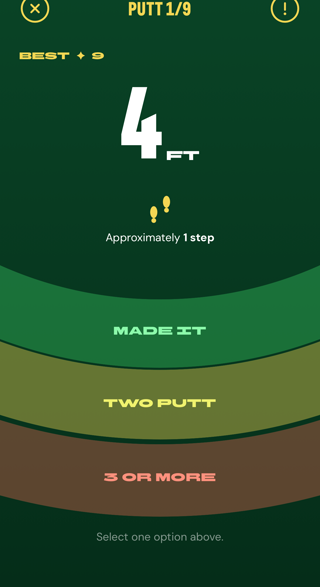
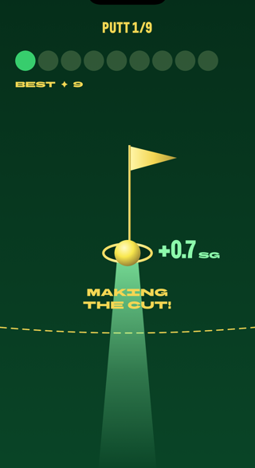
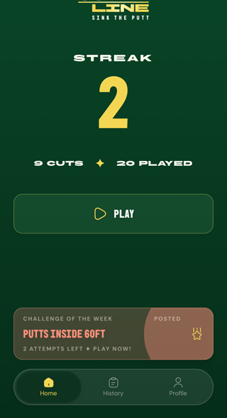
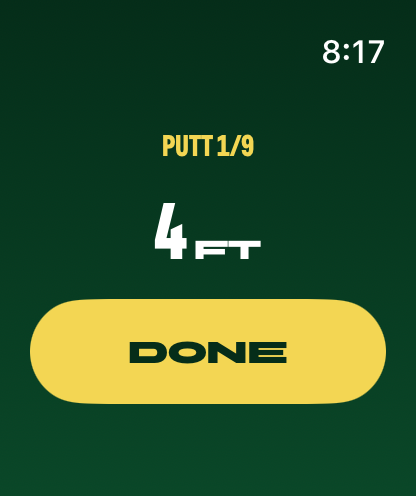
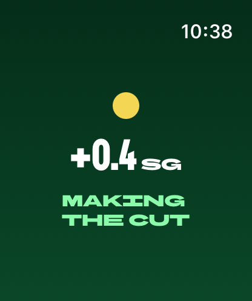

From the team at Tee Time Trainer Now in beta
5 minutes. 9 putts. Tournament pressure on every one.
Can you make the cut?
Join the beta Free · iOS · Apple Watch companion included
The gameplay loop
Set your distance, lag nine putts, and see if you beat the Tour. The whole round takes about five minutes.



New · Apple Watch
Log putts from your wrist — your phone keeps score. The watch stays awake for your whole session, confirms every putt before it counts, and shows your strokes gained the moment the ball drops. No separate sign-in, ever.


Beat the field
Fresh distances, fresh pressure. The course changes every Monday.
Commit to a round and it counts. Just like a scorecard should.
Your best round against everyone else's. Strokes gained settles it.
The ask
Cut Line is in beta. We need real golfers playing it, finding the rough edges, telling us what to fix. If you've practiced putting and felt like you were just rolling balls without a goal — this app was built for you. We'd love to know if we got it right.
— The Tee Time Trainer team
Join the TestFlight beta Free · iOS · We want your honest feedback